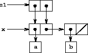

|
Chapter 2 dealt with compound data as a means for constructing computational objects that have several parts, in order to model real-world objects that have several aspects. In that chapter we introduced the discipline of data abstraction, according to which data structures are specified in terms of constructors, which create data objects, and selectors, which access the parts of compound data objects. But we now know that there is another aspect of data that chapter 2 did not address. The desire to model systems composed of objects that have changing state leads us to the need to modify compound data objects, as well as to construct and select from them. In order to model compound objects with changing state, we will design data abstractions to include, in addition to selectors and constructors, operations called mutators, which modify data objects. For instance, modeling a banking system requires us to change account balances. Thus, a data structure for representing bank accounts might admit an operation
(set-balance! <account> <new-value>)
that changes the balance of the designated account to the designated new value. Data objects for which mutators are defined are known as mutable data objects.
Chapter 2 introduced pairs as a general-purpose “glue” for synthesizing compound data. We begin this section by defining basic mutators for pairs, so that pairs can serve as building blocks for constructing mutable data objects. These mutators greatly enhance the representational power of pairs, enabling us to build data structures other than the sequences and trees that we worked with in section 2.2. We also present some examples of simulations in which complex systems are modeled as collections of objects with local state.
The basic operations on pairs – cons, car, and cdr – can be used to construct list structure and to select parts from list structure, but they are incapable of modifying list structure. The same is true of the list operations we have used so far, such as append and list, since these can be defined in terms of cons, car, and cdr. To modify list structures we need new operations.
|
 |
 |
 |
The primitive mutators for pairs are set-car! and set-cdr!. Set-car! takes two arguments, the first of which must be a pair. It modifies this pair, replacing the car pointer by a pointer to the second argument of set-car!.16
As an example, suppose that x is bound to the list ((a b) c d) and y to the list (e f) as illustrated in figure 3.12. Evaluating the expression (set-car! x y) modifies the pair to which x is bound, replacing its car by the value of y. The result of the operation is shown in figure 3.13. The structure x has been modified and would now be printed as ((e f) c d). The pairs representing the list (a b), identified by the pointer that was replaced, are now detached from the original structure.17
Compare figure 3.13 with figure 3.14, which illustrates the result of executing (define z (cons y (cdr x))) with x and y bound to the original lists of figure 3.12. The variable z is now bound to a new pair created by the cons operation; the list to which x is bound is unchanged.
The set-cdr! operation is similar to set-car!. The only difference is that the cdr pointer of the pair, rather than the car pointer, is replaced. The effect of executing (set-cdr! x y) on the lists of figure 3.12 is shown in figure 3.15. Here the cdr pointer of x has been replaced by the pointer to (e f). Also, the list (c d), which used to be the cdr of x, is now detached from the structure.
Cons builds new list structure by creating new pairs, while set-car! and set-cdr! modify existing pairs. Indeed, we could implement cons in terms of the two mutators, together with a procedure get-new-pair, which returns a new pair that is not part of any existing list structure. We obtain the new pair, set its car and cdr pointers to the designated objects, and return the new pair as the result of the cons.18
(define (cons x y)
(let ((new (get-new-pair)))
(set-car! new x)
(set-cdr! new y)
new))
Exercise 3.12. The following procedure for appending lists was introduced in section 2.2.1:
(define (append x y)
(if (null? x)
y
(cons (car x) (append (cdr x) y))))
Append forms a new list by successively consing the elements of x onto y. The procedure append! is similar to append, but it is a mutator rather than a constructor. It appends the lists by splicing them together, modifying the final pair of x so that its cdr is now y. (It is an error to call append! with an empty x.)
(define (append! x y)
(set-cdr! (last-pair x) y)
x)
Here last-pair is a procedure that returns the last pair in its argument:
(define (last-pair x)
(if (null? (cdr x))
x
(last-pair (cdr x))))
Consider the interaction
(define x (list 'a 'b))
(define y (list 'c 'd))
(define z (append x y))
z
(a b c d)
(cdr x)
<response>
(define w (append! x y))
w
(a b c d)
(cdr x)
<response>
What are the missing <response>s? Draw box-and-pointer diagrams to explain your answer.
Exercise 3.13. Consider the following make-cycle procedure, which uses the last-pair procedure defined in exercise 3.12:
(define (make-cycle x)
(set-cdr! (last-pair x) x)
x)
Draw a box-and-pointer diagram that shows the structure z created by
(define z (make-cycle (list 'a 'b 'c)))
What happens if we try to compute (last-pair z)?
Exercise 3.14. The following procedure is quite useful, although obscure:
(define (mystery x)
(define (loop x y)
(if (null? x)
y
(let ((temp (cdr x)))
(set-cdr! x y)
(loop temp x))))
(loop x '()))
Loop uses the “temporary” variable temp to hold the old value of the cdr of x, since the set-cdr! on the next line destroys the cdr. Explain what mystery does in general. Suppose v is defined by (define v (list 'a 'b 'c 'd)). Draw the box-and-pointer diagram that represents the list to which v is bound. Suppose that we now evaluate (define w (mystery v)). Draw box-and-pointer diagrams that show the structures v and w after evaluating this expression. What would be printed as the values of v and w ?
We mentioned in section 3.1.3 the theoretical issues of “sameness” and “change” raised by the introduction of assignment. These issues arise in practice when individual pairs are shared among different data objects. For example, consider the structure formed by
(define x (list 'a 'b))
(define z1 (cons x x))
As shown in figure 3.16, z1 is a pair whose car and cdr both point to the same pair x. This sharing of x by the car and cdr of z1 is a consequence of the straightforward way in which cons is implemented. In general, using cons to construct lists will result in an interlinked structure of pairs in which many individual pairs are shared by many different structures.
|  |
 |
In contrast to figure 3.16, figure 3.17 shows the structure created by
(define z2 (cons (list 'a 'b) (list 'a 'b)))
In this structure, the pairs in the two (a b) lists are distinct, although the actual symbols are shared.19
When thought of as a list, z1 and z2 both represent “the same” list, ((a b) a b). In general, sharing is completely undetectable if we operate on lists using only cons, car, and cdr. However, if we allow mutators on list structure, sharing becomes significant. As an example of the difference that sharing can make, consider the following procedure, which modifies the car of the structure to which it is applied:
(define (set-to-wow! x)
(set-car! (car x) 'wow)
x)
Even though z1 and z2 are “the same” structure, applying set-to-wow! to them yields different results. With z1, altering the car also changes the cdr, because in z1 the car and the cdr are the same pair. With z2, the car and cdr are distinct, so set-to-wow! modifies only the car:
z1
((a b) a b)
(set-to-wow! z1)
((wow b) wow b)
z2
((a b) a b)
(set-to-wow! z2)
((wow b) a b)
One way to detect sharing in list structures is to use the predicate eq?, which we introduced in section 2.3.1 as a way to test whether two symbols are equal. More generally, (eq? x y) tests whether x and y are the same object (that is, whether x and y are equal as pointers). Thus, with z1 and z2 as defined in figures 3.16 and 3.17, (eq? (car z1) (cdr z1)) is true and (eq? (car z2) (cdr z2)) is false.
As will be seen in the following sections, we can exploit sharing to greatly extend the repertoire of data structures that can be represented by pairs. On the other hand, sharing can also be dangerous, since modifications made to structures will also affect other structures that happen to share the modified parts. The mutation operations set-car! and set-cdr! should be used with care; unless we have a good understanding of how our data objects are shared, mutation can have unanticipated results.20
Exercise 3.15. Draw box-and-pointer diagrams to explain the effect of set-to-wow! on the structures z1 and z2 above.
Exercise 3.16. Ben Bitdiddle decides to write a procedure to count the number of pairs in any list structure. “It's easy,” he reasons. “The number of pairs in any structure is the number in the car plus the number in the cdr plus one more to count the current pair.” So Ben writes the following procedure:
(define (count-pairs x)
(if (not (pair? x))
0
(+ (count-pairs (car x))
(count-pairs (cdr x))
1)))
Show that this procedure is not correct. In particular, draw box-and-pointer diagrams representing list structures made up of exactly three pairs for which Ben's procedure would return 3; return 4; return 7; never return at all.
Exercise 3.17. Devise a correct version of the count-pairs procedure of exercise 3.16 that returns the number of distinct pairs in any structure. (Hint: Traverse the structure, maintaining an auxiliary data structure that is used to keep track of which pairs have already been counted.)
Exercise 3.18. Write a procedure that examines a list and determines whether it contains a cycle, that is, whether a program that tried to find the end of the list by taking successive cdrs would go into an infinite loop. Exercise 3.13 constructed such lists.
Exercise 3.19. Redo exercise 3.18 using an algorithm that takes only a constant amount of space. (This requires a very clever idea.)
When we introduced compound data, we observed in section 2.1.3 that pairs can be represented purely in terms of procedures:
(define (cons x y)
(define (dispatch m)
(cond ((eq? m 'car) x)
((eq? m 'cdr) y)
(else (error "Undefined operation -- CONS" m))))
dispatch)
(define (car z) (z 'car))
(define (cdr z) (z 'cdr))
The same observation is true for mutable data. We can implement mutable data objects as procedures using assignment and local state. For instance, we can extend the above pair implementation to handle set-car! and set-cdr! in a manner analogous to the way we implemented bank accounts using make-account in section 3.1.1:
(define (cons x y)
(define (set-x! v) (set! x v))
(define (set-y! v) (set! y v))
(define (dispatch m)
(cond ((eq? m 'car) x)
((eq? m 'cdr) y)
((eq? m 'set-car!) set-x!)
((eq? m 'set-cdr!) set-y!)
(else (error "Undefined operation -- CONS" m))))
dispatch)
(define (car z) (z 'car))
(define (cdr z) (z 'cdr))
(define (set-car! z new-value)
((z 'set-car!) new-value)
z)
(define (set-cdr! z new-value)
((z 'set-cdr!) new-value)
z)
Assignment is all that is needed, theoretically, to account for the behavior of mutable data. As soon as we admit set! to our language, we raise all the issues, not only of assignment, but of mutable data in general.21
Exercise 3.20. Draw environment diagrams to illustrate the evaluation of the sequence of expressions
(define x (cons 1 2))
(define z (cons x x))
(set-car! (cdr z) 17)
(car x)
17
using the procedural implementation of pairs given above. (Compare exercise 3.11.)
The mutators set-car! and set-cdr! enable us to use pairs to construct data structures that cannot be built with cons, car, and cdr alone. This section shows how to use pairs to represent a data structure called a queue. Section 3.3.3 will show how to represent data structures called tables.
A queue is a sequence in which items are inserted at one end (called the rear of the queue) and deleted from the other end (the front). Figure 3.18 shows an initially empty queue in which the items a and b are inserted. Then a is removed, c and d are inserted, and b is removed. Because items are always removed in the order in which they are inserted, a queue is sometimes called a FIFO (first in, first out) buffer.
| ||||||||||||||||
In terms of data abstraction, we can regard a queue as defined by the following set of operations:
Because a queue is a sequence of items, we could certainly represent it as an ordinary list; the front of the queue would be the car of the list, inserting an item in the queue would amount to appending a new element at the end of the list, and deleting an item from the queue would just be taking the cdr of the list. However, this representation is inefficient, because in order to insert an item we must scan the list until we reach the end. Since the only method we have for scanning a list is by successive cdr operations, this scanning requires θ(n) steps for a list of n items. A simple modification to the list representation overcomes this disadvantage by allowing the queue operations to be implemented so that they require θ(1) steps; that is, so that the number of steps needed is independent of the length of the queue.
The difficulty with the list representation arises from the need to scan to find the end of the list. The reason we need to scan is that, although the standard way of representing a list as a chain of pairs readily provides us with a pointer to the beginning of the list, it gives us no easily accessible pointer to the end. The modification that avoids the drawback is to represent the queue as a list, together with an additional pointer that indicates the final pair in the list. That way, when we go to insert an item, we can consult the rear pointer and so avoid scanning the list.
A queue is represented, then, as a pair of pointers, front-ptr and rear-ptr, which indicate, respectively, the first and last pairs in an ordinary list. Since we would like the queue to be an identifiable object, we can use cons to combine the two pointers. Thus, the queue itself will be the cons of the two pointers. Figure 3.19 illustrates this representation.
 |
To define the queue operations we use the following procedures, which enable us to select and to modify the front and rear pointers of a queue:
(define (front-ptr queue) (car queue))
(define (rear-ptr queue) (cdr queue))
(define (set-front-ptr! queue item) (set-car! queue item))
(define (set-rear-ptr! queue item) (set-cdr! queue item))
Now we can implement the actual queue operations. We will consider a queue to be empty if its front pointer is the empty list:
(define (empty-queue? queue) (null? (front-ptr queue)))
The make-queue constructor returns, as an initially empty queue, a pair whose car and cdr are both the empty list:
(define (make-queue) (cons '() '()))
To select the item at the front of the queue, we return the car of the pair indicated by the front pointer:
(define (front-queue queue)
(if (empty-queue? queue)
(error "FRONT called with an empty queue" queue)
(car (front-ptr queue))))
To insert an item in a queue, we follow the method whose result is indicated in figure 3.20. We first create a new pair whose car is the item to be inserted and whose cdr is the empty list. If the queue was initially empty, we set the front and rear pointers of the queue to this new pair. Otherwise, we modify the final pair in the queue to point to the new pair, and also set the rear pointer to the new pair.
(define (insert-queue! queue item)
(let ((new-pair (cons item '())))
(cond ((empty-queue? queue)
(set-front-ptr! queue new-pair)
(set-rear-ptr! queue new-pair)
queue)
(else
(set-cdr! (rear-ptr queue) new-pair)
(set-rear-ptr! queue new-pair)
queue))))
To delete the item at the front of the queue, we merely modify the front pointer so that it now points at the second item in the queue, which can be found by following the cdr pointer of the first item (see figure 3.21):22
 |
(define (delete-queue! queue)
(cond ((empty-queue? queue)
(error "DELETE! called with an empty queue" queue))
(else
(set-front-ptr! queue (cdr (front-ptr queue)))
queue)))
Exercise 3.21. Ben Bitdiddle decides to test the queue implementation described above. He types in the procedures to the Lisp interpreter and proceeds to try them out:
(define q1 (make-queue))
(insert-queue! q1 'a)
((a) a)
(insert-queue! q1 'b)
((a b) b)
(delete-queue! q1)
((b) b)
(delete-queue! q1)
(() b)
“It's all wrong!” he complains. “The interpreter's response shows that the last item is inserted into the queue twice. And when I delete both items, the second b is still there, so the queue isn't empty, even though it's supposed to be.” Eva Lu Ator suggests that Ben has misunderstood what is happening. “It's not that the items are going into the queue twice,” she explains. “It's just that the standard Lisp printer doesn't know how to make sense of the queue representation. If you want to see the queue printed correctly, you'll have to define your own print procedure for queues.” Explain what Eva Lu is talking about. In particular, show why Ben's examples produce the printed results that they do. Define a procedure print-queue that takes a queue as input and prints the sequence of items in the queue.
Exercise 3.22. Instead of representing a queue as a pair of pointers, we can build a queue as a procedure with local state. The local state will consist of pointers to the beginning and the end of an ordinary list. Thus, the make-queue procedure will have the form
(define (make-queue)
(let ((front-ptr ...)
(rear-ptr ...))
<definitions of internal procedures>
(define (dispatch m) ...)
dispatch))
Complete the definition of make-queue and provide implementations of the queue operations using this representation.
Exercise 3.23. A deque (“double-ended queue”) is a sequence in which items can be inserted and deleted at either the front or the rear. Operations on deques are the constructor make-deque, the predicate empty-deque?, selectors front-deque and rear-deque, and mutators front-insert-deque!, rear-insert-deque!, front-delete-deque!, and rear-delete-deque!. Show how to represent deques using pairs, and give implementations of the operations.23 All operations should be accomplished in θ(1) steps.
When we studied various ways of representing sets in chapter 2, we mentioned in section 2.3.3 the task of maintaining a table of records indexed by identifying keys. In the implementation of data-directed programming in section 2.4.3, we made extensive use of two-dimensional tables, in which information is stored and retrieved using two keys. Here we see how to build tables as mutable list structures.
We first consider a one-dimensional table, in which each value is stored under a single key. We implement the table as a list of records, each of which is implemented as a pair consisting of a key and the associated value. The records are glued together to form a list by pairs whose cars point to successive records. These gluing pairs are called the backbone of the table. In order to have a place that we can change when we add a new record to the table, we build the table as a headed list. A headed list has a special backbone pair at the beginning, which holds a dummy “record” – in this case the arbitrarily chosen symbol *table*. Figure 3.22 shows the box-and-pointer diagram for the table
a: 1
b: 2
c: 3
 |
To extract information from a table we use the lookup procedure, which takes a key as argument and returns the associated value (or false if there is no value stored under that key). Lookup is defined in terms of the assoc operation, which expects a key and a list of records as arguments. Note that assoc never sees the dummy record. Assoc returns the record that has the given key as its car.24 Lookup then checks to see that the resulting record returned by assoc is not false, and returns the value (the cdr) of the record.
(define (lookup key table)
(let ((record (assoc key (cdr table))))
(if record
(cdr record)
false)))
(define (assoc key records)
(cond ((null? records) false)
((equal? key (caar records)) (car records))
(else (assoc key (cdr records)))))
To insert a value in a table under a specified key, we first use assoc to see if there is already a record in the table with this key. If not, we form a new record by consing the key with the value, and insert this at the head of the table's list of records, after the dummy record. If there already is a record with this key, we set the cdr of this record to the designated new value. The header of the table provides us with a fixed location to modify in order to insert the new record.25
(define (insert! key value table)
(let ((record (assoc key (cdr table))))
(if record
(set-cdr! record value)
(set-cdr! table
(cons (cons key value) (cdr table)))))
'ok)
To construct a new table, we simply create a list containing the symbol *table*:
(define (make-table)
(list '*table*))
In a two-dimensional table, each value is indexed by two keys. We can construct such a table as a one-dimensional table in which each key identifies a subtable. Figure 3.23 shows the box-and-pointer diagram for the table
math:
+: 43
-: 45
*: 42
letters:
a: 97
b: 98
which has two subtables. (The subtables don't need a special header symbol, since the key that identifies the subtable serves this purpose.)
 |
When we look up an item, we use the first key to identify the correct subtable. Then we use the second key to identify the record within the subtable.
(define (lookup key-1 key-2 table)
(let ((subtable (assoc key-1 (cdr table))))
(if subtable
(let ((record (assoc key-2 (cdr subtable))))
(if record
(cdr record)
false))
false)))
To insert a new item under a pair of keys, we use assoc to see if there is a subtable stored under the first key. If not, we build a new subtable containing the single record (key-2, value) and insert it into the table under the first key. If a subtable already exists for the first key, we insert the new record into this subtable, using the insertion method for one-dimensional tables described above:
(define (insert! key-1 key-2 value table)
(let ((subtable (assoc key-1 (cdr table))))
(if subtable
(let ((record (assoc key-2 (cdr subtable))))
(if record
(set-cdr! record value)
(set-cdr! subtable
(cons (cons key-2 value)
(cdr subtable)))))
(set-cdr! table
(cons (list key-1
(cons key-2 value))
(cdr table)))))
'ok)
The lookup and insert! operations defined above take the table as an argument. This enables us to use programs that access more than one table. Another way to deal with multiple tables is to have separate lookup and insert! procedures for each table. We can do this by representing a table procedurally, as an object that maintains an internal table as part of its local state. When sent an appropriate message, this “table object” supplies the procedure with which to operate on the internal table. Here is a generator for two-dimensional tables represented in this fashion:
(define (make-table)
(let ((local-table (list '*table*)))
(define (lookup key-1 key-2)
(let ((subtable (assoc key-1 (cdr local-table))))
(if subtable
(let ((record (assoc key-2 (cdr subtable))))
(if record
(cdr record)
false))
false)))
(define (insert! key-1 key-2 value)
(let ((subtable (assoc key-1 (cdr local-table))))
(if subtable
(let ((record (assoc key-2 (cdr subtable))))
(if record
(set-cdr! record value)
(set-cdr! subtable
(cons (cons key-2 value)
(cdr subtable)))))
(set-cdr! local-table
(cons (list key-1
(cons key-2 value))
(cdr local-table)))))
'ok)
(define (dispatch m)
(cond ((eq? m 'lookup-proc) lookup)
((eq? m 'insert-proc!) insert!)
(else (error "Unknown operation -- TABLE" m))))
dispatch))
Using make-table, we could implement the get and put operations used in section 2.4.3 for data-directed programming, as follows:
(define operation-table (make-table))
(define get (operation-table 'lookup-proc))
(define put (operation-table 'insert-proc!))
Get takes as arguments two keys, and put takes as arguments two keys and a value. Both operations access the same local table, which is encapsulated within the object created by the call to make-table.
Exercise 3.24. In the table implementations above, the keys are tested for equality using equal? (called by assoc). This is not always the appropriate test. For instance, we might have a table with numeric keys in which we don't need an exact match to the number we're looking up, but only a number within some tolerance of it. Design a table constructor make-table that takes as an argument a same-key? procedure that will be used to test “equality” of keys. Make-table should return a dispatch procedure that can be used to access appropriate lookup and insert! procedures for a local table.
Exercise 3.25. Generalizing one- and two-dimensional tables, show how to implement a table in which values are stored under an arbitrary number of keys and different values may be stored under different numbers of keys. The lookup and insert! procedures should take as input a list of keys used to access the table.
Exercise 3.26. To search a table as implemented above, one needs to scan through the list of records. This is basically the unordered list representation of section 2.3.3. For large tables, it may be more efficient to structure the table in a different manner. Describe a table implementation where the (key, value) records are organized using a binary tree, assuming that keys can be ordered in some way (e.g., numerically or alphabetically). (Compare exercise 2.66 of chapter 2.)
Exercise 3.27. Memoization (also called tabulation) is a technique that enables a procedure to record, in a local table, values that have previously been computed. This technique can make a vast difference in the performance of a program. A memoized procedure maintains a table in which values of previous calls are stored using as keys the arguments that produced the values. When the memoized procedure is asked to compute a value, it first checks the table to see if the value is already there and, if so, just returns that value. Otherwise, it computes the new value in the ordinary way and stores this in the table. As an example of memoization, recall from section 1.2.2 the exponential process for computing Fibonacci numbers:
(define (fib n)
(cond ((= n 0) 0)
((= n 1) 1)
(else (+ (fib (- n 1))
(fib (- n 2))))))
The memoized version of the same procedure is
(define memo-fib
(memoize (lambda (n)
(cond ((= n 0) 0)
((= n 1) 1)
(else (+ (memo-fib (- n 1))
(memo-fib (- n 2))))))))
where the memoizer is defined as
(define (memoize f)
(let ((table (make-table)))
(lambda (x)
(let ((previously-computed-result (lookup x table)))
(or previously-computed-result
(let ((result (f x)))
(insert! x result table)
result))))))
Draw an environment diagram to analyze the computation of (memo-fib 3). Explain why memo-fib computes the nth Fibonacci number in a number of steps proportional to n. Would the scheme still work if we had simply defined memo-fib to be (memoize fib)?
Designing complex digital systems, such as computers, is an important engineering activity. Digital systems are constructed by interconnecting simple elements. Although the behavior of these individual elements is simple, networks of them can have very complex behavior. Computer simulation of proposed circuit designs is an important tool used by digital systems engineers. In this section we design a system for performing digital logic simulations. This system typifies a kind of program called an event-driven simulation, in which actions (“events”) trigger further events that happen at a later time, which in turn trigger more events, and so so.
Our computational model of a circuit will be composed of objects that correspond to the elementary components from which the circuit is constructed. There are wires, which carry digital signals. A digital signal may at any moment have only one of two possible values, 0 and 1. There are also various types of digital function boxes, which connect wires carrying input signals to other output wires. Such boxes produce output signals computed from their input signals. The output signal is delayed by a time that depends on the type of the function box. For example, an inverter is a primitive function box that inverts its input. If the input signal to an inverter changes to 0, then one inverter-delay later the inverter will change its output signal to 1. If the input signal to an inverter changes to 1, then one inverter-delay later the inverter will change its output signal to 0. We draw an inverter symbolically as in figure 3.24. An and-gate, also shown in figure 3.24, is a primitive function box with two inputs and one output. It drives its output signal to a value that is the logical and of the inputs. That is, if both of its input signals become 1, then one and-gate-delay time later the and-gate will force its output signal to be 1; otherwise the output will be 0. An or-gate is a similar two-input primitive function box that drives its output signal to a value that is the logical or of the inputs. That is, the output will become 1 if at least one of the input signals is 1; otherwise the output will become 0.
 |
We can connect primitive functions together to construct more complex functions. To accomplish this we wire the outputs of some function boxes to the inputs of other function boxes. For example, the half-adder circuit shown in figure 3.25 consists of an or-gate, two and-gates, and an inverter. It takes two input signals, A and B, and has two output signals, S and C. S will become 1 whenever precisely one of A and B is 1, and C will become 1 whenever A and B are both 1. We can see from the figure that, because of the delays involved, the outputs may be generated at different times. Many of the difficulties in the design of digital circuits arise from this fact.
 |
We will now build a program for modeling the digital logic circuits we wish to study. The program will construct computational objects modeling the wires, which will “hold” the signals. Function boxes will be modeled by procedures that enforce the correct relationships among the signals.
One basic element of our simulation will be a procedure make-wire, which constructs wires. For example, we can construct six wires as follows:
(define a (make-wire))
(define b (make-wire))
(define c (make-wire))
(define d (make-wire))
(define e (make-wire))
(define s (make-wire))
We attach a function box to a set of wires by calling a procedure that constructs that kind of box. The arguments to the constructor procedure are the wires to be attached to the box. For example, given that we can construct and-gates, or-gates, and inverters, we can wire together the half-adder shown in figure 3.25:
(or-gate a b d)
ok
(and-gate a b c)
ok
(inverter c e)
ok
(and-gate d e s)
ok
Better yet, we can explicitly name this operation by defining a procedure half-adder that constructs this circuit, given the four external wires to be attached to the half-adder:
(define (half-adder a b s c)
(let ((d (make-wire)) (e (make-wire)))
(or-gate a b d)
(and-gate a b c)
(inverter c e)
(and-gate d e s)
'ok))
The advantage of making this definition is that we can use half-adder itself as a building block in creating more complex circuits. Figure 3.26, for example, shows a full-adder composed of two half-adders and an or-gate.26 We can construct a full-adder as follows:
(define (full-adder a b c-in sum c-out)
(let ((s (make-wire))
(c1 (make-wire))
(c2 (make-wire)))
(half-adder b c-in s c1)
(half-adder a s sum c2)
(or-gate c1 c2 c-out)
'ok))
Having defined full-adder as a procedure, we can now use it as a building block for creating still more complex circuits. (For example, see exercise 3.30.)
 |
In essence, our simulator provides us with the tools to construct a language of circuits. If we adopt the general perspective on languages with which we approached the study of Lisp in section 1.1, we can say that the primitive function boxes form the primitive elements of the language, that wiring boxes together provides a means of combination, and that specifying wiring patterns as procedures serves as a means of abstraction.
The primitive function boxes implement the “forces” by which a change in the signal on one wire influences the signals on other wires. To build function boxes, we use the following operations on wires:
In addition, we will make use of a procedure after-delay that takes a time delay and a procedure to be run and executes the given procedure after the given delay.
Using these procedures, we can define the primitive digital logic functions. To connect an input to an output through an inverter, we use add-action! to associate with the input wire a procedure that will be run whenever the signal on the input wire changes value. The procedure computes the logical-not of the input signal, and then, after one inverter-delay, sets the output signal to be this new value:
(define (inverter input output)
(define (invert-input)
(let ((new-value (logical-not (get-signal input))))
(after-delay inverter-delay
(lambda ()
(set-signal! output new-value)))))
(add-action! input invert-input)
'ok)
(define (logical-not s)
(cond ((= s 0) 1)
((= s 1) 0)
(else (error "Invalid signal" s))))
An and-gate is a little more complex. The action procedure must be run if either of the inputs to the gate changes. It computes the logical-and (using a procedure analogous to logical-not) of the values of the signals on the input wires and sets up a change to the new value to occur on the output wire after one and-gate-delay.
(define (and-gate a1 a2 output)
(define (and-action-procedure)
(let ((new-value
(logical-and (get-signal a1) (get-signal a2))))
(after-delay and-gate-delay
(lambda ()
(set-signal! output new-value)))))
(add-action! a1 and-action-procedure)
(add-action! a2 and-action-procedure)
'ok)
Exercise 3.28. Define an or-gate as a primitive function box. Your or-gate constructor should be similar to and-gate.
Exercise 3.29. Another way to construct an or-gate is as a compound digital logic device, built from and-gates and inverters. Define a procedure or-gate that accomplishes this. What is the delay time of the or-gate in terms of and-gate-delay and inverter-delay?
Exercise 3.30. Figure 3.27 shows a ripple-carry adder formed by stringing together n full-adders. This is the simplest form of parallel adder for adding two n-bit binary numbers. The inputs A1, A2, A3, ..., An and B1, B2, B3, ..., Bn are the two binary numbers to be added (each Ak and Bk is a 0 or a 1). The circuit generates S1, S2, S3, ..., Sn, the n bits of the sum, and C, the carry from the addition. Write a procedure ripple-carry-adder that generates this circuit. The procedure should take as arguments three lists of n wires each – the Ak, the Bk, and the Sk – and also another wire C. The major drawback of the ripple-carry adder is the need to wait for the carry signals to propagate. What is the delay needed to obtain the complete output from an n-bit ripple-carry adder, expressed in terms of the delays for and-gates, or-gates, and inverters?
 |
A wire in our simulation will be a computational object with two local state variables: a signal-value (initially taken to be 0) and a collection of action-procedures to be run when the signal changes value. We implement the wire, using message-passing style, as a collection of local procedures together with a dispatch procedure that selects the appropriate local operation, just as we did with the simple bank-account object in section 3.1.1:
(define (make-wire)
(let ((signal-value 0) (action-procedures '()))
(define (set-my-signal! new-value)
(if (not (= signal-value new-value))
(begin (set! signal-value new-value)
(call-each action-procedures))
'done))
(define (accept-action-procedure! proc)
(set! action-procedures (cons proc action-procedures))
(proc))
(define (dispatch m)
(cond ((eq? m 'get-signal) signal-value)
((eq? m 'set-signal!) set-my-signal!)
((eq? m 'add-action!) accept-action-procedure!)
(else (error "Unknown operation -- WIRE" m))))
dispatch))
The local procedure set-my-signal! tests whether the new signal value changes the signal on the wire. If so, it runs each of the action procedures, using the following procedure call-each, which calls each of the items in a list of no-argument procedures:
(define (call-each procedures)
(if (null? procedures)
'done
(begin
((car procedures))
(call-each (cdr procedures)))))
The local procedure accept-action-procedure! adds the given procedure to the list of procedures to be run, and then runs the new procedure once. (See exercise 3.31.)
With the local dispatch procedure set up as specified, we can provide the following procedures to access the local operations on wires:27
(define (get-signal wire)
(wire 'get-signal))
(define (set-signal! wire new-value)
((wire 'set-signal!) new-value))
(define (add-action! wire action-procedure)
((wire 'add-action!) action-procedure))
Wires, which have time-varying signals and may be incrementally attached to devices, are typical of mutable objects. We have modeled them as procedures with local state variables that are modified by assignment. When a new wire is created, a new set of state variables is allocated (by the let expression in make-wire) and a new dispatch procedure is constructed and returned, capturing the environment with the new state variables.
The wires are shared among the various devices that have been connected to them. Thus, a change made by an interaction with one device will affect all the other devices attached to the wire. The wire communicates the change to its neighbors by calling the action procedures provided to it when the connections were established.
The only thing needed to complete the simulator is after-delay. The idea here is that we maintain a data structure, called an agenda, that contains a schedule of things to do. The following operations are defined for agendas:
The particular agenda that we use is denoted by the-agenda. The procedure after-delay adds new elements to the-agenda:
(define (after-delay delay action)
(add-to-agenda! (+ delay (current-time the-agenda))
action
the-agenda))
The simulation is driven by the procedure propagate, which operates on the-agenda, executing each procedure on the agenda in sequence. In general, as the simulation runs, new items will be added to the agenda, and propagate will continue the simulation as long as there are items on the agenda:
(define (propagate)
(if (empty-agenda? the-agenda)
'done
(let ((first-item (first-agenda-item the-agenda)))
(first-item)
(remove-first-agenda-item! the-agenda)
(propagate))))
The following procedure, which places a “probe” on a wire, shows the simulator in action. The probe tells the wire that, whenever its signal changes value, it should print the new signal value, together with the current time and a name that identifies the wire:
(define (probe name wire)
(add-action! wire
(lambda ()
(newline)
(display name)
(display " ")
(display (current-time the-agenda))
(display " New-value = ")
(display (get-signal wire)))))
We begin by initializing the agenda and specifying delays for the primitive function boxes:
(define the-agenda (make-agenda))
(define inverter-delay 2)
(define and-gate-delay 3)
(define or-gate-delay 5)
Now we define four wires, placing probes on two of them:
(define input-1 (make-wire))
(define input-2 (make-wire))
(define sum (make-wire))
(define carry (make-wire))
(probe 'sum sum)
sum 0 New-value = 0
(probe 'carry carry)
carry 0 New-value = 0
Next we connect the wires in a half-adder circuit (as in figure 3.25), set the signal on input-1 to 1, and run the simulation:
(half-adder input-1 input-2 sum carry)
ok
(set-signal! input-1 1)
done
(propagate)
sum 8 New-value = 1
done
The sum signal changes to 1 at time 8. We are now eight time units from the beginning of the simulation. At this point, we can set the signal on input-2 to 1 and allow the values to propagate:
(set-signal! input-2 1)
done
(propagate)
carry 11 New-value = 1
sum 16 New-value = 0
done
The carry changes to 1 at time 11 and the sum changes to 0 at time 16.
Exercise 3.31. The internal procedure accept-action-procedure! defined in make-wire specifies that when a new action procedure is added to a wire, the procedure is immediately run. Explain why this initialization is necessary. In particular, trace through the half-adder example in the paragraphs above and say how the system's response would differ if we had defined accept-action-procedure! as
(define (accept-action-procedure! proc)
(set! action-procedures (cons proc action-procedures)))
Finally, we give details of the agenda data structure, which holds the procedures that are scheduled for future execution.
The agenda is made up of time segments. Each time segment is a pair consisting of a number (the time) and a queue (see exercise 3.32) that holds the procedures that are scheduled to be run during that time segment.
(define (make-time-segment time queue)
(cons time queue))
(define (segment-time s) (car s))
(define (segment-queue s) (cdr s))
We will operate on the time-segment queues using the queue operations described in section 3.3.2.
The agenda itself is a one-dimensional table of time segments. It differs from the tables described in section 3.3.3 in that the segments will be sorted in order of increasing time. In addition, we store the current time (i.e., the time of the last action that was processed) at the head of the agenda. A newly constructed agenda has no time segments and has a current time of 0:28
(define (make-agenda) (list 0))
(define (current-time agenda) (car agenda))
(define (set-current-time! agenda time)
(set-car! agenda time))
(define (segments agenda) (cdr agenda))
(define (set-segments! agenda segments)
(set-cdr! agenda segments))
(define (first-segment agenda) (car (segments agenda)))
(define (rest-segments agenda) (cdr (segments agenda)))
An agenda is empty if it has no time segments:
(define (empty-agenda? agenda)
(null? (segments agenda)))
To add an action to an agenda, we first check if the agenda is empty. If so, we create a time segment for the action and install this in the agenda. Otherwise, we scan the agenda, examining the time of each segment. If we find a segment for our appointed time, we add the action to the associated queue. If we reach a time later than the one to which we are appointed, we insert a new time segment into the agenda just before it. If we reach the end of the agenda, we must create a new time segment at the end.
(define (add-to-agenda! time action agenda)
(define (belongs-before? segments)
(or (null? segments)
(< time (segment-time (car segments)))))
(define (make-new-time-segment time action)
(let ((q (make-queue)))
(insert-queue! q action)
(make-time-segment time q)))
(define (add-to-segments! segments)
(if (= (segment-time (car segments)) time)
(insert-queue! (segment-queue (car segments))
action)
(let ((rest (cdr segments)))
(if (belongs-before? rest)
(set-cdr!
segments
(cons (make-new-time-segment time action)
(cdr segments)))
(add-to-segments! rest)))))
(let ((segments (segments agenda)))
(if (belongs-before? segments)
(set-segments!
agenda
(cons (make-new-time-segment time action)
segments))
(add-to-segments! segments))))
The procedure that removes the first item from the agenda deletes the item at the front of the queue in the first time segment. If this deletion makes the time segment empty, we remove it from the list of segments:29
(define (remove-first-agenda-item! agenda)
(let ((q (segment-queue (first-segment agenda))))
(delete-queue! q)
(if (empty-queue? q)
(set-segments! agenda (rest-segments agenda)))))
The first agenda item is found at the head of the queue in the first time segment. Whenever we extract an item, we also update the current time:30
(define (first-agenda-item agenda)
(if (empty-agenda? agenda)
(error "Agenda is empty -- FIRST-AGENDA-ITEM")
(let ((first-seg (first-segment agenda)))
(set-current-time! agenda (segment-time first-seg))
(front-queue (segment-queue first-seg)))))
Exercise 3.32. The procedures to be run during each time segment of the agenda are kept in a queue. Thus, the procedures for each segment are called in the order in which they were added to the agenda (first in, first out). Explain why this order must be used. In particular, trace the behavior of an and-gate whose inputs change from 0,1 to 1,0 in the same segment and say how the behavior would differ if we stored a segment's procedures in an ordinary list, adding and removing procedures only at the front (last in, first out).
Computer programs are traditionally organized as one-directional computations, which perform operations on prespecified arguments to produce desired outputs. On the other hand, we often model systems in terms of relations among quantities. For example, a mathematical model of a mechanical structure might include the information that the deflection d of a metal rod is related to the force F on the rod, the length L of the rod, the cross-sectional area A, and the elastic modulus E via the equation

Such an equation is not one-directional. Given any four of the quantities, we can use it to compute the fifth. Yet translating the equation into a traditional computer language would force us to choose one of the quantities to be computed in terms of the other four. Thus, a procedure for computing the area A could not be used to compute the deflection d, even though the computations of A and d arise from the same equation.31
In this section, we sketch the design of a language that enables us to work in terms of relations themselves. The primitive elements of the language are primitive constraints, which state that certain relations hold between quantities. For example, (adder a b c) specifies that the quantities a, b, and c must be related by the equation a + b = c, (multiplier x y z) expresses the constraint xy = z, and (constant 3.14 x) says that the value of x must be 3.14.
Our language provides a means of combining primitive constraints in order to express more complex relations. We combine constraints by constructing constraint networks, in which constraints are joined by connectors. A connector is an object that “holds” a value that may participate in one or more constraints. For example, we know that the relationship between Fahrenheit and Celsius temperatures is

Such a constraint can be thought of as a network consisting of primitive adder, multiplier, and constant constraints (figure 3.28). In the figure, we see on the left a multiplier box with three terminals, labeled m1, m2, and p. These connect the multiplier to the rest of the network as follows: The m1 terminal is linked to a connector C, which will hold the Celsius temperature. The m2 terminal is linked to a connector w, which is also linked to a constant box that holds 9. The p terminal, which the multiplier box constrains to be the product of m1 and m2, is linked to the p terminal of another multiplier box, whose m2 is connected to a constant 5 and whose m1 is connected to one of the terms in a sum.
 |
Computation by such a network proceeds as follows: When a connector is given a value (by the user or by a constraint box to which it is linked), it awakens all of its associated constraints (except for the constraint that just awakened it) to inform them that it has a value. Each awakened constraint box then polls its connectors to see if there is enough information to determine a value for a connector. If so, the box sets that connector, which then awakens all of its associated constraints, and so on. For instance, in conversion between Celsius and Fahrenheit, w, x, and y are immediately set by the constant boxes to 9, 5, and 32, respectively. The connectors awaken the multipliers and the adder, which determine that there is not enough information to proceed. If the user (or some other part of the network) sets C to a value (say 25), the leftmost multiplier will be awakened, and it will set u to 25 · 9 = 225. Then u awakens the second multiplier, which sets v to 45, and v awakens the adder, which sets F to 77.
To use the constraint system to carry out the temperature computation outlined above, we first create two connectors, C and F, by calling the constructor make-connector, and link C and F in an appropriate network:
(define C (make-connector))
(define F (make-connector))
(celsius-fahrenheit-converter C F)
ok
The procedure that creates the network is defined as follows:
(define (celsius-fahrenheit-converter c f)
(let ((u (make-connector))
(v (make-connector))
(w (make-connector))
(x (make-connector))
(y (make-connector)))
(multiplier c w u)
(multiplier v x u)
(adder v y f)
(constant 9 w)
(constant 5 x)
(constant 32 y)
'ok))
This procedure creates the internal connectors u, v, w, x, and y, and links them as shown in figure 3.28 using the primitive constraint constructors adder, multiplier, and constant. Just as with the digital-circuit simulator of section 3.3.4, expressing these combinations of primitive elements in terms of procedures automatically provides our language with a means of abstraction for compound objects.
To watch the network in action, we can place probes on the connectors C and F, using a probe procedure similar to the one we used to monitor wires in section 3.3.4. Placing a probe on a connector will cause a message to be printed whenever the connector is given a value:
(probe "Celsius temp" C)
(probe "Fahrenheit temp" F)
Next we set the value of C to 25. (The third argument to set-value! tells C that this directive comes from the user.)
(set-value! C 25 'user)
Probe: Celsius temp = 25
Probe: Fahrenheit temp = 77
done
The probe on C awakens and reports the value. C also propagates its value through the network as described above. This sets F to 77, which is reported by the probe on F.
Now we can try to set F to a new value, say 212:
(set-value! F 212 'user)
Error! Contradiction (77 212)
The connector complains that it has sensed a contradiction: Its value is 77, and someone is trying to set it to 212. If we really want to reuse the network with new values, we can tell C to forget its old value:
(forget-value! C 'user)
Probe: Celsius temp = ?
Probe: Fahrenheit temp = ?
done
C finds that the user, who set its value originally, is now retracting that value, so C agrees to lose its value, as shown by the probe, and informs the rest of the network of this fact. This information eventually propagates to F, which now finds that it has no reason for continuing to believe that its own value is 77. Thus, F also gives up its value, as shown by the probe.
Now that F has no value, we are free to set it to 212:
(set-value! F 212 'user)
Probe: Fahrenheit temp = 212
Probe: Celsius temp = 100
done
This new value, when propagated through the network, forces C to have a value of 100, and this is registered by the probe on C. Notice that the very same network is being used to compute C given F and to compute F given C. This nondirectionality of computation is the distinguishing feature of constraint-based systems.
The constraint system is implemented via procedural objects with local state, in a manner very similar to the digital-circuit simulator of section 3.3.4. Although the primitive objects of the constraint system are somewhat more complex, the overall system is simpler, since there is no concern about agendas and logic delays.
The basic operations on connectors are the following:
The connectors communicate with the constraints by means of the procedures inform-about-value, which tells the given constraint that the connector has a value, and inform-about-no-value, which tells the constraint that the connector has lost its value.
Adder constructs an adder constraint among summand connectors a1 and a2 and a sum connector. An adder is implemented as a procedure with local state (the procedure me below):
(define (adder a1 a2 sum)
(define (process-new-value)
(cond ((and (has-value? a1) (has-value? a2))
(set-value! sum
(+ (get-value a1) (get-value a2))
me))
((and (has-value? a1) (has-value? sum))
(set-value! a2
(- (get-value sum) (get-value a1))
me))
((and (has-value? a2) (has-value? sum))
(set-value! a1
(- (get-value sum) (get-value a2))
me))))
(define (process-forget-value)
(forget-value! sum me)
(forget-value! a1 me)
(forget-value! a2 me)
(process-new-value))
(define (me request)
(cond ((eq? request 'I-have-a-value)
(process-new-value))
((eq? request 'I-lost-my-value)
(process-forget-value))
(else
(error "Unknown request -- ADDER" request))))
(connect a1 me)
(connect a2 me)
(connect sum me)
me)
Adder connects the new adder to the designated connectors and returns it as its value. The procedure me, which represents the adder, acts as a dispatch to the local procedures. The following “syntax interfaces” (see footnote 27 in section 3.3.4) are used in conjunction with the dispatch:
(define (inform-about-value constraint)
(constraint 'I-have-a-value))
(define (inform-about-no-value constraint)
(constraint 'I-lost-my-value))
The adder's local procedure process-new-value is called when the adder is informed that one of its connectors has a value. The adder first checks to see if both a1 and a2 have values. If so, it tells sum to set its value to the sum of the two addends. The informant argument to set-value! is me, which is the adder object itself. If a1 and a2 do not both have values, then the adder checks to see if perhaps a1 and sum have values. If so, it sets a2 to the difference of these two. Finally, if a2 and sum have values, this gives the adder enough information to set a1. If the adder is told that one of its connectors has lost a value, it requests that all of its connectors now lose their values. (Only those values that were set by this adder are actually lost.) Then it runs process-new-value. The reason for this last step is that one or more connectors may still have a value (that is, a connector may have had a value that was not originally set by the adder), and these values may need to be propagated back through the adder.
A multiplier is very similar to an adder. It will set its product to 0 if either of the factors is 0, even if the other factor is not known.
(define (multiplier m1 m2 product)
(define (process-new-value)
(cond ((or (and (has-value? m1) (= (get-value m1) 0))
(and (has-value? m2) (= (get-value m2) 0)))
(set-value! product 0 me))
((and (has-value? m1) (has-value? m2))
(set-value! product
(* (get-value m1) (get-value m2))
me))
((and (has-value? product) (has-value? m1))
(set-value! m2
(/ (get-value product) (get-value m1))
me))
((and (has-value? product) (has-value? m2))
(set-value! m1
(/ (get-value product) (get-value m2))
me))))
(define (process-forget-value)
(forget-value! product me)
(forget-value! m1 me)
(forget-value! m2 me)
(process-new-value))
(define (me request)
(cond ((eq? request 'I-have-a-value)
(process-new-value))
((eq? request 'I-lost-my-value)
(process-forget-value))
(else
(error "Unknown request -- MULTIPLIER" request))))
(connect m1 me)
(connect m2 me)
(connect product me)
me)
A constant constructor simply sets the value of the designated connector. Any I-have-a-value or I-lost-my-value message sent to the constant box will produce an error.
(define (constant value connector)
(define (me request)
(error "Unknown request -- CONSTANT" request))
(connect connector me)
(set-value! connector value me)
me)
Finally, a probe prints a message about the setting or unsetting of the designated connector:
(define (probe name connector)
(define (print-probe value)
(newline)
(display "Probe: ")
(display name)
(display " = ")
(display value))
(define (process-new-value)
(print-probe (get-value connector)))
(define (process-forget-value)
(print-probe "?"))
(define (me request)
(cond ((eq? request 'I-have-a-value)
(process-new-value))
((eq? request 'I-lost-my-value)
(process-forget-value))
(else
(error "Unknown request -- PROBE" request))))
(connect connector me)
me)
A connector is represented as a procedural object with local state variables value, the current value of the connector; informant, the object that set the connector's value; and constraints, a list of the constraints in which the connector participates.
(define (make-connector)
(let ((value false) (informant false) (constraints '()))
(define (set-my-value newval setter)
(cond ((not (has-value? me))
(set! value newval)
(set! informant setter)
(for-each-except setter
inform-about-value
constraints))
((not (= value newval))
(error "Contradiction" (list value newval)))
(else 'ignored)))
(define (forget-my-value retractor)
(if (eq? retractor informant)
(begin (set! informant false)
(for-each-except retractor
inform-about-no-value
constraints))
'ignored))
(define (connect new-constraint)
(if (not (memq new-constraint constraints))
(set! constraints
(cons new-constraint constraints)))
(if (has-value? me)
(inform-about-value new-constraint))
'done)
(define (me request)
(cond ((eq? request 'has-value?)
(if informant true false))
((eq? request 'value) value)
((eq? request 'set-value!) set-my-value)
((eq? request 'forget) forget-my-value)
((eq? request 'connect) connect)
(else (error "Unknown operation -- CONNECTOR"
request))))
me))
The connector's local procedure set-my-value is called when there is a request to set the connector's value. If the connector does not currently have a value, it will set its value and remember as informant the constraint that requested the value to be set.32 Then the connector will notify all of its participating constraints except the constraint that requested the value to be set. This is accomplished using the following iterator, which applies a designated procedure to all items in a list except a given one:
(define (for-each-except exception procedure list)
(define (loop items)
(cond ((null? items) 'done)
((eq? (car items) exception) (loop (cdr items)))
(else (procedure (car items))
(loop (cdr items)))))
(loop list))
If a connector is asked to forget its value, it runs the local procedure forget-my-value, which first checks to make sure that the request is coming from the same object that set the value originally. If so, the connector informs its associated constraints about the loss of the value.
The local procedure connect adds the designated new constraint to the list of constraints if it is not already in that list. Then, if the connector has a value, it informs the new constraint of this fact.
The connector's procedure me serves as a dispatch to the other internal procedures and also represents the connector as an object. The following procedures provide a syntax interface for the dispatch:
(define (has-value? connector)
(connector 'has-value?))
(define (get-value connector)
(connector 'value))
(define (set-value! connector new-value informant)
((connector 'set-value!) new-value informant))
(define (forget-value! connector retractor)
((connector 'forget) retractor))
(define (connect connector new-constraint)
((connector 'connect) new-constraint))
Exercise 3.33. Using primitive multiplier, adder, and constant constraints, define a procedure averager that takes three connectors a, b, and c as inputs and establishes the constraint that the value of c is the average of the values of a and b.
Exercise 3.34. Louis Reasoner wants to build a squarer, a constraint device with two terminals such that the value of connector b on the second terminal will always be the square of the value a on the first terminal. He proposes the following simple device made from a multiplier:
(define (squarer a b)
(multiplier a a b))
There is a serious flaw in this idea. Explain.
Exercise 3.35. Ben Bitdiddle tells Louis that one way to avoid the trouble in exercise 3.34 is to define a squarer as a new primitive constraint. Fill in the missing portions in Ben's outline for a procedure to implement such a constraint:
(define (squarer a b)
(define (process-new-value)
(if (has-value? b)
(if (< (get-value b) 0)
(error "square less than 0 -- SQUARER" (get-value b))
<alternative1>)
<alternative2>))
(define (process-forget-value) <body1>)
(define (me request) <body2>)
<rest of definition>
me)
Exercise 3.36. Suppose we evaluate the following sequence of expressions in the global environment:
(define a (make-connector))
(define b (make-connector))
(set-value! a 10 'user)
At some time during evaluation of the set-value!, the following expression from the connector's local procedure is evaluated:
(for-each-except setter inform-about-value constraints)
Draw an environment diagram showing the environment in which the above expression is evaluated.
Exercise 3.37. The celsius-fahrenheit-converter procedure is cumbersome when compared with a more expression-oriented style of definition, such as
(define (celsius-fahrenheit-converter x)
(c+ (c* (c/ (cv 9) (cv 5))
x)
(cv 32)))
(define C (make-connector))
(define F (celsius-fahrenheit-converter C))
Here c+, c*, etc. are the “constraint” versions of the arithmetic operations. For example, c+ takes two connectors as arguments and returns a connector that is related to these by an adder constraint:
(define (c+ x y)
(let ((z (make-connector)))
(adder x y z)
z))
Define analogous procedures c-, c*, c/, and cv (constant value) that enable us to define compound constraints as in the converter example above.33
16 Set-car! and set-cdr! return implementation-dependent values. Like set!, they should be used only for their effect.
17 We see from this that mutation operations on lists can create “garbage” that is not part of any accessible structure. We will see in section 5.3.2 that Lisp memory-management systems include a garbage collector, which identifies and recycles the memory space used by unneeded pairs.
18 Get-new-pair is one of the operations that must be implemented as part of the memory management required by a Lisp implementation. We will discuss this in section 5.3.1.
19 The two pairs are distinct because each call to cons returns a new pair. The symbols are shared; in Scheme there is a unique symbol with any given name. Since Scheme provides no way to mutate a symbol, this sharing is undetectable. Note also that the sharing is what enables us to compare symbols using eq?, which simply checks equality of pointers.
20 The subtleties of dealing with sharing of mutable data objects reflect the underlying issues of “sameness” and “change” that were raised in section 3.1.3. We mentioned there that admitting change to our language requires that a compound object must have an “identity” that is something different from the pieces from which it is composed. In Lisp, we consider this “identity” to be the quality that is tested by eq?, i.e., by equality of pointers. Since in most Lisp implementations a pointer is essentially a memory address, we are “solving the problem” of defining the identity of objects by stipulating that a data object “itself” is the information stored in some particular set of memory locations in the computer. This suffices for simple Lisp programs, but is hardly a general way to resolve the issue of “sameness” in computational models.
21 On the other hand, from the viewpoint of implementation, assignment requires us to modify the environment, which is itself a mutable data structure. Thus, assignment and mutation are equipotent: Each can be implemented in terms of the other.
22 If the first item is the final item in the queue, the front pointer will be the empty list after the deletion, which will mark the queue as empty; we needn't worry about updating the rear pointer, which will still point to the deleted item, because empty-queue? looks only at the front pointer.
23 Be careful not to make the interpreter try to print a structure that contains cycles. (See exercise 3.13.)
24 Because assoc uses equal?, it can recognize keys that are symbols, numbers, or list structure.
25 Thus, the first backbone pair is the object that represents the table “itself”; that is, a pointer to the table is a pointer to this pair. This same backbone pair always starts the table. If we did not arrange things in this way, insert! would have to return a new value for the start of the table when it added a new record.
26 A full-adder is a basic circuit element used in adding two binary numbers. Here A and B are the bits at corresponding positions in the two numbers to be added, and Cin is the carry bit from the addition one place to the right. The circuit generates SUM, which is the sum bit in the corresponding position, and Cout, which is the carry bit to be propagated to the left.
27 These procedures are simply syntactic sugar that allow us to use ordinary procedural syntax to access the local procedures of objects. It is striking that we can interchange the role of “procedures” and “data” in such a simple way. For example, if we write (wire 'get-signal) we think of wire as a procedure that is called with the message get-signal as input. Alternatively, writing (get-signal wire) encourages us to think of wire as a data object that is the input to a procedure get-signal. The truth of the matter is that, in a language in which we can deal with procedures as objects, there is no fundamental difference between “procedures” and “data,” and we can choose our syntactic sugar to allow us to program in whatever style we choose.
28 The agenda is a headed list, like the tables in section 3.3.3, but since the list is headed by the time, we do not need an additional dummy header (such as the *table* symbol used with tables).
29 Observe that the if expression in this procedure has no <alternative> expression. Such a “one-armed if statement” is used to decide whether to do something, rather than to select between two expressions. An if expression returns an unspecified value if the predicate is false and there is no <alternative>.
30 In this way, the current time will always be the time of the action most recently processed. Storing this time at the head of the agenda ensures that it will still be available even if the associated time segment has been deleted.
31 Constraint propagation first appeared in the incredibly forward-looking SKETCHPAD system of Ivan Sutherland (1963). A beautiful constraint-propagation system based on the Smalltalk language was developed by Alan Borning (1977) at Xerox Palo Alto Research Center. Sussman, Stallman, and Steele applied constraint propagation to electrical circuit analysis (Sussman and Stallman 1975; Sussman and Steele 1980). TK!Solver (Konopasek and Jayaraman 1984) is an extensive modeling environment based on constraints.
32 The setter might not be a constraint. In our temperature example, we used user as the setter.
33 The expression-oriented format is convenient because it avoids the need to name the intermediate expressions in a computation. Our original formulation of the constraint language is cumbersome in the same way that many languages are cumbersome when dealing with operations on compound data. For example, if we wanted to compute the product (a + b) · (c + d), where the variables represent vectors, we could work in “imperative style,” using procedures that set the values of designated vector arguments but do not themselves return vectors as values:
(v-sum a b temp1)
(v-sum c d temp2)
(v-prod temp1 temp2 answer)
Alternatively, we could deal with expressions, using procedures that return vectors as values, and thus avoid explicitly mentioning temp1 and temp2:
(define answer (v-prod (v-sum a b) (v-sum c d)))
Since Lisp allows us to return compound objects as values of procedures, we can transform our imperative-style constraint language into an expression-oriented style as shown in this exercise. In languages that are impoverished in handling compound objects, such as Algol, Basic, and Pascal (unless one explicitly uses Pascal pointer variables), one is usually stuck with the imperative style when manipulating compound objects. Given the advantage of the expression-oriented format, one might ask if there is any reason to have implemented the system in imperative style, as we did in this section. One reason is that the non-expression-oriented constraint language provides a handle on constraint objects (e.g., the value of the adder procedure) as well as on connector objects. This is useful if we wish to extend the system with new operations that communicate with constraints directly rather than only indirectly via operations on connectors. Although it is easy to implement the expression-oriented style in terms of the imperative implementation, it is very difficult to do the converse.